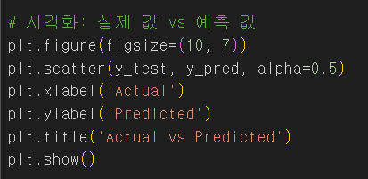
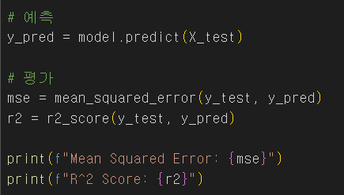
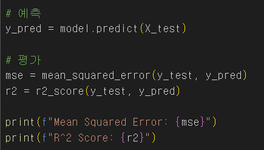

Results
- 데이터 전처리 과정
- 결측값 처리 방법
- 데이터셋을 로드한 후 결측값을 확인하고, 평균값으로 대체하였습니다.
- 결측값이 있는 열을 삭제하는 대신, 평균값으로 채뤄 데이터 손실을 최소화했습니다.
- 범주형 변수 변환 방법
- 범주형 변수인 성별, 연령대코드, 시도코드 등의 데이터를 One-Hot Encoding 을 사용하여 수치형으로 변환하였습니다.
- 이를 통해 범주형 변수를 모델이 이해할 수 있도록 처리했습니다.
- 데이터 분할 (훈련 데이터와 테스트 데이터)
- 전체 데이터를 학습 데이터와 테스트 데이터로 분할하여 모델의 학습과 평가에 사용하였습니다.
- 학습 데이터와 테스트 데이터의 비율은 80:20으로 설정하였습니다. 


 
